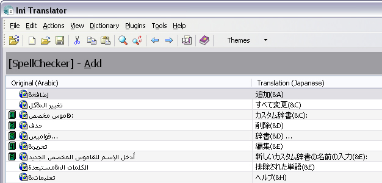

Bookmarks
Use bookmarks to set a marker on a line in the listview and quickly jump
to that line from anywhere in the file by pressing a shortcut key. When a
bookmark is set, a small numbered icon is displayed to the left of the
bookmarked line. This image shows two lines bookmarked using bookmark "1" and "2":

-
To add a bookmark, press Ctrl+Shift
and a number between 0 to 9
-
To remove a bookmark, select the line where the bookmark is located
(or press Ctrl and the number)
and press the Ctrl+Shift and the number again.
If yo don't want to move to the bookmark to delte it, press
Ctrl+Shift+number twice.
-
Move a bookmark simply by pressing Ctrl+Shift
and the number on another line
-
To jump to a bookmark, press Ctrl and a number
between 0 to 9
-
Bookmark are not removed when you load new file(s) unless the bookmark is located beyond the last
row in the loaded files
-
Bookmarks are not persisted (i.e they are not restored the next
time you run the program)
-
If you have more than one bookmark on the same line, only the
highest numbered bookmark is visible. All the others are still
available, though.
-
Bookmarks are anchored to the row, not the content of the row